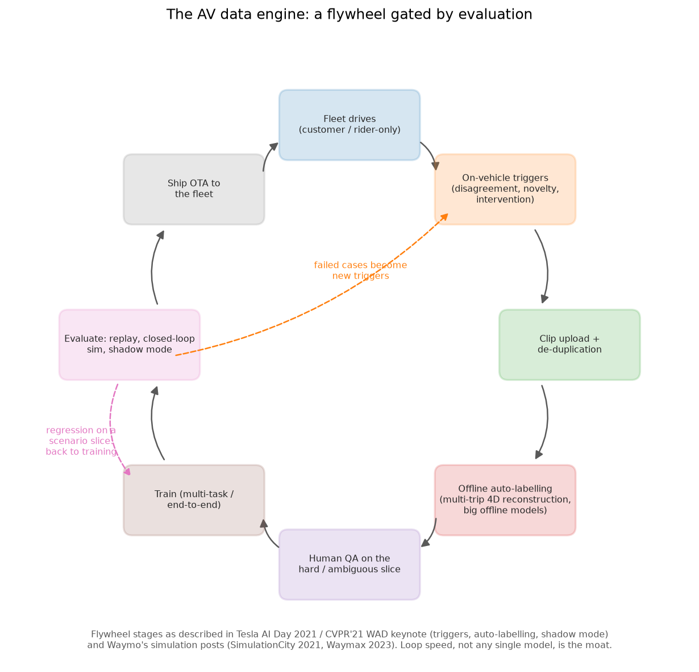

Scale AI & data engines¶
Why this matters at staff level. Every company in this part depends on a data engine, and most of them either built one or bought one. Scale AI is the clearest public example of the bought version: it sells labelling, RLHF data and evaluation to AV companies and frontier labs, and it publishes enough about its benchmarks to reason about. Interviews here, and interviews anywhere about data, test one thing: can you reason about label cost, label quality and the value of a label, instead of treating annotation as a line item someone else owns.
TL;DR: the interview card¶
- The product is a loop, and the workforce is one stage in it. Task design, a labelling interface, a model in the loop that pre-labels, human review concentrated on the hard cases, quality control by consensus and gold sets, and delivery back into training.
- AV labelling wants 3D and 4D output (boxes, tracks, lanes, semantic point clouds). A single sensor frame is the wrong unit. The sequence is the unit, because consistency across time is most of the value.
- Auto-labelling flips the economics. A big offline model that sees the whole clip and has no latency budget beats a human at geometry and kinematics, so humans move from drawing to adjudicating. Tesla and Waymo both describe versions of this.
- RLHF data is a different business: preference comparisons, instruction demonstrations, expert domain data, and red-teaming, sold to labs whose bottleneck moved from compute to data. Anthropic's helpful-and-harmless paper (arXiv:2204.05862) is the public shape of the artefact.
- Evaluation as a product: the SEAL leaderboards, Humanity's Last Exam (arXiv:2501.14249, with CAIS), GSM1k (arXiv:2405.00332, a contamination probe), SWE-bench Pro (arXiv:2509.16941), MultiChallenge (arXiv:2501.17399), MASK (arXiv:2503.03750) and the Remote Labor Index (arXiv:2510.26787).
- The quality levers, in rough order of power: task design, annotator selection and training, model-assisted pre-labelling, consensus and adjudication, gold sets, and measurement of inter-annotator agreement. Throwing more annotators at a badly specified task buys noise at scale.
- The cost question you will be asked: given a budget, how do you split it between more labels, better labels, and better sampling of which data to label? Sampling usually wins.
- Business context: in June 2025 Meta took a large stake in Scale and Alexandr Wang moved to Meta to lead its superintelligence effort, which prompted several competitors to reduce their reliance on a vendor whose largest investor is a rival lab.
1. The business in one paragraph¶
Scale AI sells the data that supervised and post-trained models need: annotation for perception (images, video, lidar), instruction and preference data for language models, expert-written domain data, red-teaming, and evaluation. Its customers were originally autonomous-vehicle companies, then generative-AI labs, then governments and enterprises. The company also runs a public research and evaluation arm whose output (the SEAL leaderboards and a set of benchmark papers) doubles as marketing and as a genuine contribution: contamination probes, hard expert-written exams, and agentic benchmarks. In June 2025 Meta invested a reported multi-billion-dollar sum for a large minority stake and Scale's co-founder and CEO joined Meta, which changed the company's position in the market: a data vendor part-owned by one frontier lab is awkward for the others.
Understanding the business matters for the interview because it explains the technical emphasis. A vendor's margin comes from automating its own labour, so the interesting engineering is model-in-the-loop labelling, quality control that avoids double-labelling everything, and pricing that tracks difficulty instead of volume.
The ML problems that define the business¶
| Problem | Why it is hard | Public evidence |
|---|---|---|
| Labelling 3D and 4D scenes | Humans are poor at drawing consistent 3D boxes across a sequence; the label the model needs is a reconstruction, and a drawing is a poor approximation of one. | Scale's AV data-engine product pages; Tesla AI Day 2021/2022 auto-labelling; Uber ATG's Auto4D (arXiv:2101.06586). |
| Automating your own labour | Pre-labelling shifts human effort from drawing to review, but a wrong pre-label biases the reviewer (anchoring). | Scale data-engine product materials; weak-supervision literature. |
| Quality control without double-labelling | Consensus is the obvious answer and it doubles cost; gold sets are cheap but only measure what they cover. | Standard practice; Anthropic's HH dataset paper documents annotator disagreement rates in preference data. |
| Preference data that a reward model can learn from | Annotators disagree, prefer longer answers, and cannot judge expert domains. | InstructGPT (arXiv:2203.02155); Anthropic HH (arXiv:2204.05862). |
| Benchmarks that survive contact with frontier models | Public benchmarks saturate and leak into training data. | GSM1k (arXiv:2405.00332); HLE (arXiv:2501.14249); SWE-bench Pro (arXiv:2509.16941). |
| Measuring what models do for real work | Static question sets say little about long-horizon agentic tasks. | Remote Labor Index (arXiv:2510.26787); MultiChallenge (arXiv:2501.17399). |
| Measuring honesty separately from accuracy | A model can be accurate and still assert things it internally represents as false. | MASK (arXiv:2503.03750). |
2. The stack as publicly described¶
flowchart LR
subgraph In["Customer side"]
RAW[Raw data: driving logs, images,<br/>documents, model outputs] --> SEL[Sampling / mining<br/>which data is worth labelling<br/><i>customer-specific, mostly not public</i>]:::inf
end
subgraph Engine["Data engine"]
SEL --> TASK[Task design + label spec<br/>ontology, edge-case rules]
TASK --> PRE[Model pre-labelling<br/>offline models, no latency budget]
PRE --> UI[Annotation interface<br/>adjudicate, correct, escalate]
UI --> QC[Quality control:<br/>gold tasks, consensus on a sample,<br/>reviewer scoring, agreement metrics]
QC --> DEL[Delivery + audit trail]
QC -.-> TASK
end
subgraph Out["Customer training loop"]
DEL --> TRN[Train / post-train]
TRN --> EVAL[Evaluate]
EVAL -.->|failure slices| SEL
TRN --> PRE
end
subgraph Pub["Public research arm"]
BENCH[SEAL leaderboards, HLE, GSM1k,<br/>SWE-bench Pro, MultiChallenge,<br/>MASK, Remote Labor Index]
end
EVAL -.-> BENCH
classDef inf fill:#fff3cd,stroke:#b8860b;Known versus inferred. The benchmark papers, the leaderboards and the general shape of the product (labelling, RLHF data, evaluation, model-assisted annotation) are public. The internal quality-control machinery, the pricing model, and how much of any given delivery is model-generated are not; the QC box above describes standard practice in the field; it is not a documented Scale pipeline. The sampling box is shaded because which data a customer chooses to send is the customer's decision.
3. Deep dives¶
3.1 The data engine as a business, and why auto-labelling is the whole margin¶
The naive model of an annotation vendor is a marketplace: tasks in, labelled tasks out, price per task. That business has no leverage. Its cost scales linearly with volume and its margin is whatever the labour arbitrage allows. The version with leverage puts a model in the loop, so the marginal cost per label falls as the model improves.
The mechanism is simple to state and fiddly to run. An offline model pre-labels the task. The human's job changes from drawing a box to deciding whether a box is right, which is several times faster and, for 3D geometry, more accurate than what the human would have drawn unaided. As the model improves, the fraction of tasks that need any human touch falls, and the humans that remain are concentrated on the cases the model finds hard. Both Tesla's auto-labelling pipeline and the academic version (Uber ATG's Auto4D, which refines 4D object labels from sequential point clouds) describe the same trade.

A vendor sells stages three through six of that loop. The customer keeps the trigger policy and the deployment decision, which is why the interesting conversations with a vendor are about which clips to send, not about price per box.
Two failure modes come with it. The first is anchoring: a reviewer shown a plausible wrong pre-label accepts it more often than they would have produced it. The fix is to measure it, by routing a sample of tasks with deliberately perturbed pre-labels and checking the correction rate, and to route a fraction of tasks with no pre-label at all as a control. The second is correlated error: model mistakes are systematic, so they do not average out across annotators the way independent human error does. A model that mislabels a class of occluded pedestrians will produce a training set that is confidently wrong about occluded pedestrians, and consensus between three reviewers looking at the same pre-label will not catch it. Gold sets labelled without model assistance are the control for this.
The theory of learning from imperfect labels, and of using a stronger model to supervise a weaker one, is in Weak supervision & auto-labelling and Semi-supervised learning.
The trade-off. Model-assisted labelling cuts cost per label by a large factor and improves consistency on geometry. It introduces a bias channel that human-only labelling does not have, and it couples your label quality to your model quality, so a regression in the pre-labeller silently degrades every dataset produced afterwards.
Sources. Scale's data-engine product pages (scale.com/data-engine); Tesla AI Day 2021 and 2022 (auto-labelling); Yang et al., "Auto4D: Learning to Label 4D Objects from Sequential Point Clouds" (arXiv:2101.06586).
How to say it in the interview
"I'd put a model in front of every annotator and change the human's job from drawing to judging. That's the economics of it: the marginal cost of a label falls as the model improves, and for 3D geometry the offline model is already better than a person with a mouse, which is what Tesla's AI Day auto-labelling sections and the Auto4D paper both show. So the humans go where the model is uncertain, and everything else gets spot-checked. I wouldn't pretend this is free. Two things break. Reviewers anchor on a plausible wrong pre-label and accept it, so I'd route a small slice of tasks with perturbed pre-labels and measure the correction rate, plus a control slice with no pre-label at all. And model error is correlated, so three reviewers looking at the same wrong box all say yes. That's why I'd keep a gold set labelled without any model assistance and treat it as the only real measure of quality. The number I'd report to the customer is accuracy on that gold set, broken out by the slices they care about, not average throughput."
3.2 Labelling for autonomy: the sequence is the unit¶
Perception labels for driving are not per-image annotations. The model being trained consumes a bird's-eye-view scene with tracks, so the label has to be consistent in 3D and consistent across time. Ask a person to draw a 3D box on a lidar frame and they will do it badly and slowly. Ask them to draw it on two hundred consecutive frames and the identity will drift, the dimensions will jitter, and the resulting supervision will teach the model that objects change size.
The approach used across the industry is to reconstruct first and label second. Solve for the ego trajectory across the clip, accumulate the point cloud into a single static scene, separate static structure from moving objects, fit a rigid box once per object and propagate it through the sequence with a kinematic model, then present the human with the result to adjudicate. The human corrects an object, not a frame. This is what makes the label a 4D label: one consistent object across the whole sequence.
The same restructuring applies to lane and map labels, which are graphs with topology instead of pixels, and where the value of the label is the connectivity a single frame never shows. See Multi-camera & BEV, Tracking and 3D perception.
The trade-off. Sequence-level labelling produces supervision that per-frame annotation cannot, and it is much cheaper per frame. It needs a reconstruction pipeline that works, and when the reconstruction is wrong the error is systematic across the entire clip instead of staying confined to one frame.
How to say it in the interview
"For driving data I'd never price or design this per frame. The unit is the clip. You solve the ego trajectory, accumulate the point cloud, split static from dynamic, fit each object once and propagate it with a motion model, and then the annotator adjudicates whole objects. That's the structure Tesla described at AI Day and it's what the Auto4D paper formalises for sequential point clouds. The reason isn't only cost. Per-frame boxes jitter in size and swap identities, and that teaches the model that cars change dimensions, so per-frame annotation actively produces worse supervision. The risk I'd flag is that a bad reconstruction corrupts an entire clip instead of one frame, so I'd hold per-clip quality metrics and check a sample of clips against a human-verified gold reconstruction. I'd report track-level metrics, identity switches and dimensional consistency, because those are what the downstream tracker actually inherits."
3.3 RLHF and expert data: what a lab is actually buying¶
When labs' bottleneck moved from compute to data, the demand changed shape. A frontier lab buying data wants some mix of: instruction demonstrations written by capable people, pairwise preference comparisons for reward modelling, expert domain content (medicine, law, competitive mathematics, specific programming ecosystems), red-team attempts, and increasingly, full agentic trajectories with tool calls.
Preference data is the subtle product. The reward model trained on it inherits every property of the annotation process. Annotators who are rushed prefer shorter answers; annotators paid per task prefer answers that are quick to judge, which tends to mean confident ones; annotators without domain expertise cannot tell a correct derivation from a fluent wrong one, so a reward model trained on their comparisons will reward fluency. Anthropic's helpful-and-harmless paper is the public artefact to read here: it released a preference dataset and discusses the annotation process, and its RLHF training material is the clearest public account of what these comparisons are used for. The mathematics of turning comparisons into a reward, and of what goes wrong when the reward is a proxy, is in Reward models & preferences and RLHF with PPO.
The expert-data business has different economics. You are not paying for volume, you are paying for scarcity: a working oncologist or a competitive programmer costs orders of magnitude more per hour than a general annotator, and the tasks take longer. That pushes the design toward extracting maximum signal per expert hour: have the expert write the hard part and a cheaper annotator format it, have the expert adjudicate model-generated candidates instead of authoring from scratch, and reuse each expert item across multiple training uses (SFT target, preference pair, eval item).
The trade-off. Buying preference data is fast and scales with budget. It couples your model's values and quality ceiling to a vendor's annotation guidelines, which are not your guidelines, and the resulting reward model has biases you did not choose and cannot see directly. Constitutional AI, covered in the frontier labs chapter, is the alternative path: generate the comparisons from an explicit written spec.
How to say it in the interview
"If I'm buying preference data, the thing I'm really buying is the annotation guideline, because the reward model inherits it. So I'd spend my effort on the spec and on a calibration set before I spend it on volume. Concretely: write the rubric, have my own team label a few hundred comparisons against it, then measure the vendor's agreement with my team on those same items and keep measuring it every week. Anthropic's helpful-and-harmless paper is the reference point for what the artefact looks like and for how much annotators disagree on it. The failure I'd watch for is length bias and fluency bias: rushed or non-expert annotators reward long confident answers, and then the reward model does too, and then the policy does. For expert domains I'd restructure the task before paying for more hours, have the expert adjudicate model-generated candidates instead of authoring from scratch, and reuse each item as an SFT target, a preference pair and an eval question. And I'd keep a portion of expert time for evaluation only, never training, so I have something uncontaminated to measure against."
3.4 Evaluation as a product: contamination, saturation, and agentic tasks¶
Scale's public research output is mostly about measurement, and it maps onto the three things that break benchmarks.
Contamination. GSM1k is the cleanest demonstration. The team rebuilt a thousand grade-school math problems matching GSM8K's distribution from scratch, so the new set could not be in any training corpus, then compared model accuracy on the two. Models that had memorised GSM8K dropped; models that had learned to do arithmetic did not. This is the design to copy whenever you suspect leakage: build a distribution-matched held-out set after the cut-off and report the delta, not the absolute score.
Saturation. When frontier models score above ninety percent, a benchmark stops carrying information. Humanity's Last Exam, built with the Center for AI Safety, is the response: thousands of expert-written questions across many subjects, commissioned specifically to be hard for current frontier models, with a public leaderboard. The design cost is that the questions must be genuinely answerable and verifiable, which is why the collection process ran through expert review instead of crowd submission alone.
Realism. Static question-answering says little about whether a model can do work. SWE-bench Pro extends software-engineering evaluation to harder, contamination-resistant tasks with a public leaderboard, a released harness and a held-out set. The Remote Labor Index goes further and measures end-to-end performance on real remote-work projects. MultiChallenge targets multi-turn instruction following, where frontier models were reported to score below fifty percent when the paper was written. MASK targets honesty specifically, separating whether a model believes something from whether it asserts it, which accuracy benchmarks conflate.
The statistics of doing any of this properly, confidence intervals, paired comparison, and the incentive problem that grading creates, is in Evaluation.
The trade-off. A public leaderboard is verifiable and becomes training data. A private held-out set resists contamination and cannot be independently checked. Running both, with the private set as the decision-maker and the public one for comparability, is the practical answer, and it is what the SEAL leaderboards do by holding out the question sets while publishing the rankings.
Sources. SEAL leaderboards (scale.com/leaderboard); Zhang et al., GSM1k (arXiv:2405.00332); Phan et al., Humanity's Last Exam (arXiv:2501.14249, lastexam.ai, dataset, results post); SWE-bench Pro (arXiv:2509.16941, leaderboard, harness, dataset); MultiChallenge (arXiv:2501.17399); MASK (arXiv:2503.03750, code); Remote Labor Index (arXiv:2510.26787).
How to say it in the interview
"My first move on any benchmark number is to ask whether the questions were in the training data, and the way to find out is GSM1k's design: rebuild a distribution-matched set from scratch after the cut-off and compare. The drop between the public set and the rebuilt one is the contamination estimate, and it's a much more useful number than either score alone. Second, I'd stop reporting saturated benchmarks entirely. Above ninety percent the metric carries almost no information, which is the gap Humanity's Last Exam was commissioned to fill. Third, for anything agentic I'd evaluate on tasks with an execution-based checker rather than a static answer key, the SWE-bench Pro pattern, because a rubric score on an agent's transcript measures my judge more than it measures the agent. The trade-off I'd commit to is running two suites: a public one for comparability, which will leak, and a private held-out one that makes the ship decision. And I'd report confidence intervals on both, because most of the gaps people argue about are inside the noise."
3.5 Reasoning about label cost against label value¶
This is the question a staff candidate is expected to answer well, and it comes up at every company in this part, not only at a vendor.
You have a budget. You can spend it on more labels (same process, more volume), better labels (consensus, expert annotators, tighter guidelines), or better sampling (spend on deciding which data to label). The sampling lever is usually the largest, and it is the one teams under-invest in, because more volume is easier to buy.
The reason sampling wins is that label value is wildly non-uniform. On a mature detector, the ten-thousandth labelled image of a car in daylight moves nothing, and one labelled image of a partially occluded pedestrian in rain at dusk moves a slice metric you care about. Model-disagreement sampling, novelty scores, and scenario-targeted mining, the trigger machinery described in Tesla's data engine, all exist to find those items. Weak supervision & auto-labelling covers active selection formally.
A defensible framework to say out loud:
- Define the slices that matter and the metric per slice, before buying anything.
- Run a small pilot at three quality levels (single annotator, consensus of three, expert) on the same items, and measure both the cost multiple and the label accuracy against a gold set. You now know your price of quality.
- Run a data-scaling experiment on one slice: label 1k, 2k, 4k items and fit the slice metric against label count. The slope tells you the value of volume in that slice.
- Compare the marginal metric gain per dollar across the three levers, and spend where the slope is steepest. Re-run the comparison periodically, because the answer moves as the model improves.
- Reserve a fixed fraction, held constant, for gold-set and evaluation labels. That budget never competes with training data, or it will lose every time and you will end up unable to measure anything.
The label-noise mathematics matters for step two. For a classifier, symmetric label noise at rate \(\eta\) mostly costs sample efficiency, and more noisy labels can beat fewer clean ones. Asymmetric or correlated noise, which is what you get from a biased pre-labeller or a misread guideline, shifts the decision boundary and cannot be bought off with volume. That asymmetry is why "is the error random or systematic" is the first question to ask about any quality report.
How to say it in the interview
"I'd refuse to answer 'how many labels do we need' and answer 'what's the marginal value per dollar on each lever' instead. Three levers: more labels, better labels, better choice of which data to label. I'd run a pilot to price each one. For quality, label the same few hundred items at single, triple-consensus and expert levels and measure accuracy against a gold set, that gives me the cost multiple for a known accuracy gain. For volume, label one slice at 1k, 2k and 4k and fit the slice metric against count, that gives me the slope. Then I spend where the slope per dollar is steepest, and I re-check it every quarter because the answer moves as the model gets better. My prior is that sampling wins, because label value isn't uniform: the ten-thousandth daylight car does nothing and one occluded pedestrian in rain moves a slice. That's the whole reason Tesla built trigger-based collection rather than sampling miles uniformly. One rule I'd hold firm on: a fixed slice of the budget goes to gold and evaluation labels and never competes with training data, because if it competes it loses, and then I can't measure anything. And I'd always ask whether the label error is random or systematic, since random noise mostly costs sample efficiency and systematic noise moves the decision boundary where no amount of volume will save you."
3.6 Buy, build, or both¶
Every company in this part has made this call. The answer is rarely all one way.
Arguments for buying: annotation is an operations business with hiring, training, scheduling, quality management and geographic spread, and it is not most companies' core competency. A vendor absorbs demand spikes. For a new domain where you do not yet know the right ontology, a vendor's experience across customers is worth something.
Arguments for building: the label spec is your product's definition of correctness, and outsourcing it outsources a design decision you will fight over later. Feedback latency matters enormously in a data engine, and an internal team can turn a failure slice into labelled data in a day where a vendor contract takes weeks. Sensitive data may not be able to leave. And once you have an auto-labeller, the remaining human work is adjudication by people who understand your ontology deeply, which is a small specialised team rather than a large generic one.
The hybrid that most mature teams converge on: own the task design, the ontology, the gold sets and the quality measurement; own the pre-labelling models; outsource the volume adjudication; keep a small in-house expert team for the hardest slices and for the gold labels themselves. Never outsource the evaluation data.
The June 2025 Meta investment added a consideration that is specific but instructive: several labs reduced their use of Scale afterwards, because a supplier that a competitor part-owns creates an information-exposure question independent of any contract. Vendor concentration is a real risk in a data strategy, not a purely commercial one.
How to say it in the interview
"Both, split on a specific line. I'd own the ontology, the gold sets, the quality measurement and the pre-labelling models, and I'd outsource volume adjudication. The reason for that split is that the label spec is my definition of correctness, and if I hand that to a vendor I've handed away a product decision I'll end up relitigating. The reason to outsource the volume is that annotation is an operations business, hiring and scheduling and quality management across time zones, and that isn't where I want my engineers. The thing I'd never outsource is evaluation data, because the moment my eval set lives at a vendor I've lost the ability to claim it's uncontaminated. I'd also name vendor concentration as a real risk, not just a commercial one. After Meta's investment in Scale in mid-2025, several labs pulled back, and that's an information-exposure problem no contract clause fully solves. So I'd keep a second vendor qualified even if I don't use them much, and I'd keep my task definitions portable enough to move."
4. Likely interview questions¶
Q1. You have $2M and a detector that's at 92% mAP but fails on night-time occluded pedestrians. How do you spend it?
Answer sketch. Not uniformly. Define the failure slice and its metric first. Then: mine for the slice (model disagreement, novelty, scenario detectors) rather than buying random volume; pilot three quality levels on a few hundred items to price quality; run a small data-scaling curve on the slice to price volume; spend where the marginal slice-metric gain per dollar is highest. Hold back a fixed fraction for gold and evaluation labels. Expect sampling to dominate. Link: Weak supervision & auto-labelling.
How to say it in the interview
"I wouldn't buy volume. At 92% the average image is worthless to me and the night occluded pedestrian is worth a lot, so most of that money goes into finding those, through model disagreement and scenario mining, the same trigger idea Tesla described at AI Day. Before committing I'd run two small experiments: the same few hundred slice items labelled at single, consensus and expert quality to price quality, and a 1k/2k/4k scaling curve on the slice to price volume. Then I spend on whichever slope per dollar is steeper. And a fixed slice of the budget goes to gold labels for that slice, because otherwise I can't tell whether any of it worked."
Q2. Design the quality-control system for a 3D labelling pipeline, without double-labelling everything.
Answer sketch. Layers: gold tasks injected at a known rate and scored per annotator; consensus on a stratified sample instead of everything; reviewer hierarchy with escalation for disagreement; automated consistency checks (box dimensions stable across a track, physically implausible velocities, objects inside other objects); annotator scoring that routes hard tasks to better annotators; and periodic audit by an expert team. Report per-slice accuracy against the gold set rather than throughput.
How to say it in the interview
"Consensus on everything doubles the cost for a uniform benefit, and the benefit isn't uniform, so I'd stratify. Gold tasks injected at a known rate give me a per-annotator accuracy estimate continuously. Consensus goes on a sample, weighted toward the slices I care about and the annotators whose gold scores are borderline. Then automated checks do a surprising amount of work for free: a track whose box dimensions change by 30%, a velocity that's physically impossible, an object inside another object. Those catch the systematic errors cheaply. What I'd report to the customer is accuracy per slice against gold, and I'd resist reporting throughput as a quality proxy, because they move in opposite directions."
Q3. Your pre-labelling model improved and label throughput doubled. What could have gone wrong that you cannot see?
Answer sketch. Reviewer anchoring rising with pre-label plausibility; gold-set coverage failing to include the slices where the new model changed behaviour; correlated error now baked into more of the dataset; annotators learning to accept rather than adjudicate. Detection: perturbed pre-label probes, no-pre-label control tasks, gold sets refreshed and expanded when the pre-labeller changes, and comparing accuracy against gold before and after, with throughput ignored.
How to say it in the interview
"Throughput doubling is exactly what I'd expect if reviewers stopped reviewing. The measurement I need is accuracy against gold, split before and after the model change, and on slices chosen where the new model behaves differently from the old one. I'd also run two probes continuously: a small stream of tasks with deliberately perturbed pre-labels, where I know the right answer is 'correct this', and a control stream with no pre-label at all. If the correction rate on perturbed tasks drops, that's anchoring, and it means my throughput gain is partly fake. The deeper risk is that model error is correlated, so the bad labels cluster in one region of the data and consensus won't find them."
Q4. A customer wants 4D labels for 10,000 driving clips. Quote the approach and where the cost sits.
Answer sketch. Reconstruction-first: ego-trajectory solve, point-cloud accumulation, static/dynamic separation, per-object fit and propagation, then human adjudication per object. Cost sits in (a) the reconstruction compute, (b) adjudication time on dynamic objects and occlusions, (c) QC. Price by clip difficulty, not by frame count. Risks: reconstruction failures corrupt whole clips.
How to say it in the interview
"I'd quote per clip, because the unit of work is the clip and not the frame. The pipeline reconstructs first: solve the ego trajectory, accumulate the cloud, split static from dynamic, fit each object once and propagate with a motion model, and only then does a human touch it, adjudicating whole objects. That's the Auto4D structure and it's what Tesla described. Most of the human cost lands on dynamic objects and long occlusions, so I'd price clips on the count of dynamic tracks and not on duration. The risk I'd put in the contract is that a failed reconstruction corrupts an entire clip, so I'd include a per-clip QC gate and a re-do allowance."
Q5. How do you know your preference dataset isn't just teaching the model to write longer?
Answer sketch. Measure it directly: regression of preference on length, controlling for content; length-matched evaluation pairs; report win rate at matched length. Fix at source: guidelines that name length neutrality, tasks that present length-matched candidates, annotator training and calibration. Then check the reward model for length sensitivity with synthetic padding. Link: Reward models & preferences.
How to say it in the interview
"I'd test the reward model directly instead of arguing about the guideline. Take a set of responses, pad them with content-free but fluent text, and see whether the reward goes up. If it does, I have a length bias and I know its magnitude. On the data side I'd regress preference on length and report the win rate at matched length, which usually looks a lot less impressive than the headline number. The source fix is task design: present length-matched candidates where I can, and write length neutrality into the rubric with examples, because annotators default to 'more thorough means better' unless you tell them otherwise."
Q6. Design a contamination check for a benchmark you suspect is in the training data.
Answer sketch. Build a distribution-matched replica after the model's cut-off (GSM1k design) and compare accuracies; look at the gap between the two, and ignore the absolute level. Supporting probes: canary strings, n-gram overlap against available corpora, performance on perturbed versions of the same questions (renamed entities, changed numbers), and ordering effects. Report the delta with confidence intervals.
How to say it in the interview
"The strongest check is to rebuild the benchmark. GSM1k did exactly that for GSM8K, matching the distribution but writing fresh problems after the cut-off, and then the interesting number is the drop, not the score. If I can't afford a rebuild, I'd perturb: rename entities, change the numbers, reorder the options, and see whether accuracy falls more than the perturbation should justify. N-gram overlap against whatever corpora I can access is a cheap supporting signal but it misses paraphrase. I'd report the delta with a confidence interval, because on a few hundred questions a five-point drop can be noise."
Q7. What does MASK measure that an accuracy benchmark doesn't?
Answer sketch. Honesty as distinct from accuracy: whether the model asserts something contrary to what it represents as true, elicited by pressuring it, rather than whether its assertion matches the world. A model can be wrong without lying and can lie while being wrong. Scaling improves accuracy without necessarily improving honesty.
How to say it in the interview
"Accuracy compares the model's answer against the world. MASK compares the model's assertion to the model's own belief, elicited separately, so it isolates lying from being mistaken. Those are different failures with different fixes: being wrong is a capability problem, asserting what you don't believe under pressure is a training-incentive problem. For an eval suite that split is load-bearing: scaling tends to fix the first and leave the second alone, so an accuracy-only suite shows you progress while the honesty profile sits still or slides."
Q8. Coding: given N annotators labelling M items with K classes, compute inter-annotator agreement and identify unreliable annotators.
Answer sketch. Compute observed agreement and chance-corrected agreement (Cohen's kappa pairwise, Fleiss' kappa for N raters). Per annotator: agreement with the majority label, agreement with gold items, and a confusion matrix against the consensus to distinguish noise from systematic bias. Shapes on every array. Test on synthetic data with a planted bad annotator and a planted biased annotator, and check the two are distinguished. Link: Statistics.
How to say it in the interview
"I'd compute Fleiss' kappa for the overall picture and then go per annotator, because the aggregate number tells me there's a problem but not who. Per annotator I'd look at agreement with the majority, agreement on gold items, and a confusion matrix against consensus. That last one is what separates a noisy annotator from a biased one, and they need different responses: retraining for bias, removal for noise. My test would plant both kinds of bad annotator in synthetic data and check that the code distinguishes them, since a single agreement scalar won't."
Q9. A vendor reports 99% label accuracy. What questions do you ask?
Answer sketch. Accuracy against what (gold set, consensus, or their own review)? Who made the gold set, and was it model-assisted? What is the slice breakdown, especially the rare classes? What is the sampling rate for the audit, and is it stratified? What counts as an error (a 0.2m box offset)? Is the error random or systematic? Has the gold set been refreshed since the pre-labeller changed?
How to say it in the interview
"Ninety-nine percent of what, measured against what, on which slices. If the gold set was labelled with the same pre-labelling model, the number is circular. If it's aggregate, it's dominated by the easy majority class and tells me nothing about the rare cases I'm actually buying. And I'd want to know the error definition, because for 3D boxes a tolerance choice can move accuracy by ten points. The question I'd care most about is whether the residual error is random or systematic, since a systematic 1% concentrated in one class is worse for me than a random 5%."
Q10. Build versus buy for your annotation pipeline. Commit to an answer.
Answer sketch. Hybrid with a specific line: own ontology, gold sets, quality measurement and pre-labelling models; outsource volume adjudication; keep a small in-house expert team for the hardest slices and the gold labels; never outsource evaluation data. Consider feedback latency, data sensitivity, and vendor concentration risk.
How to say it in the interview
"Hybrid, and the line matters more than the ratio. I own the ontology, the gold sets, the quality measurement and the pre-labeller. The vendor does volume adjudication. The argument is feedback latency: my data engine's value is how fast a failure slice becomes labelled data, and internal teams turn that in a day where a contract change takes weeks, so I keep the fast loop in-house and buy the slow bulk. Evaluation data never leaves. And I'd keep a second vendor qualified, because after the Meta investment in Scale in mid-2025 several labs found out how quickly a supplier relationship can become a strategic problem."
Q11. How would you evaluate an agent that does multi-hour tasks, and what would you buy to do it?
Answer sketch. Execution-based checking wherever possible (tests pass, artefact produced, state reached), the SWE-bench Pro and Remote Labor Index pattern. Buy: real task specifications from practitioners in the target domain, with reference solutions and checkers, not rubric-only items. Report success per task alongside cost per completed task, and hold out a private set.
How to say it in the interview
"I'd buy tasks with checkers, and skip questions with answer keys. The SWE-bench Pro design is the model: real repository-level problems where the verification is running the tests, and the Remote Labor Index extends it to whole freelance projects with deliverables. Rubric-scored transcripts measure my judge, so I'd use those only where execution checking is impossible and I'd calibrate the judge against human graders and report the agreement. Cost per completed task goes next to success rate, because an agent that succeeds at three times the price is a different product decision."
Q12. Your model is now good enough that 95% of pre-labels are accepted. What is the business, and what is the risk?
Answer sketch. The business shifts from labelling to (a) finding the 5% worth human attention, which is a mining and uncertainty-estimation problem, and (b) evaluation and gold data, which never automates. Risk: the accepted 95% is no longer independently verified, so the dataset's quality is now the model's quality, and any drift is invisible. Keep an unassisted gold stream permanently.
How to say it in the interview
"At that point the product is triage and evaluation. Labelling is the commodity. The engineering moves to uncertainty estimation and mining, finding the 5% that deserve a human, and to the gold data, which never automates. The risk is that my dataset quality is now just my model quality with extra steps, and if the pre-labeller drifts nobody will notice, because the acceptance rate stays high. So I'd permanently fund a stream of unassisted labels, small but never zero, as the only independent measurement I have left."
Q13. Explain how label noise affects a trained classifier, and when more noisy labels beat fewer clean ones.
Answer sketch. Symmetric noise at rate \(\eta\) primarily reduces effective sample size and inflates variance, and with enough data the Bayes-optimal boundary is recoverable; techniques like loss correction and robust losses help. Asymmetric or correlated noise shifts the decision boundary systematically and more data makes it worse. So more noisy labels win when the noise is close to random and the model is variance-limited, and lose when the noise is biased. Link: Regularization.
How to say it in the interview
"It depends entirely on whether the noise is random or structured. Symmetric noise mostly costs effective sample size, so if I'm variance-limited, ten thousand labels at 90% accuracy beat two thousand at 99%. Structured noise is the opposite: a biased pre-labeller or a misread guideline moves the decision boundary, and adding data moves it further in the wrong direction. That's the first question I ask on any quality report, and it's why gold sets have to be produced by a different process from the bulk labels, otherwise they share the bias and can't detect it."
Q14. You're asked to reduce data spend by 40% without hurting model quality. Where do you start?
Answer sketch. Audit label value before cutting volume: deduplicate near identical items, measure the slice-level marginal value curve and cut spend in saturated slices, raise the pre-labelling acceptance threshold, move from consensus to stratified consensus, renegotiate pricing to difficulty-based. Protect gold and evaluation spend absolutely. Measure with a held-out training run on the reduced dataset.
How to say it in the interview
"First I'd look for saturation. Fit the slice metric against label count per slice, and cut spend where the curve is flat, which in a mature dataset is most of it. Then deduplication, because near-identical items are common in continuously collected data and they cost full price. Then quality tiering: consensus only where the gold scores say it's needed, and nowhere else. What I wouldn't touch is gold and evaluation spend, because that's how I'll prove the 40% cut didn't hurt anything, and the proof is a training run on the reduced dataset compared against the current model on the same slices."
5. What to bring from your background¶
If you have run large-scale detection or OCR, you have run a data engine whether or not you called it one. The translation is direct, and it is worth rehearsing in the vendor's vocabulary.
- Label ontology design. You have argued about what counts as a separate text region or a separate object. That argument is the highest-leverage part of this business, and being able to describe a specific ontology decision and its downstream consequence is strong signal.
- Quality measurement. Inter-annotator agreement, gold sets, systematic versus random error. Bring a number: how much did label noise cost you on a specific metric, and how did you find out.
- Active selection. If you have built mining or triggers to decide what to label next, lead with it. Most candidates talk about models and very few can describe a sampling policy and its measured yield.
- Pre-labelling and its failure modes. Anchoring and correlated error are the two things a vendor interview will probe. If you have measured them, say how.
- Evaluation design. Contamination control, held-out sets, slice metrics, confidence intervals. The evaluation half of Scale's business is the same skill as designing a regression gate for a production vision model.
The one thing to avoid is talking about annotation as a cost centre. In this business it is the product, and the interview is testing whether you treat it that way.
6. Sources¶
Benchmarks and evaluation research
- Phan et al., "Humanity's Last Exam" (2025). arXiv:2501.14249 · lastexam.ai · dataset · Scale results post
- Zhang et al., "A Careful Examination of Large Language Model Performance on Grade School Arithmetic" (GSM1k, 2024). arXiv:2405.00332
- "SWE-bench Pro" (2025). arXiv:2509.16941 · leaderboard · harness · dataset
- "MultiChallenge: A Realistic Multi-Turn Conversation Evaluation Benchmark" (2025). arXiv:2501.17399
- "MASK: A Benchmark for Disentangling Honesty from Accuracy in AI Systems" (2025). arXiv:2503.03750 · code
- Mazeika et al., "Remote Labor Index" (2025). arXiv:2510.26787
- SEAL leaderboards. scale.com/leaderboard · labs.scale.com/leaderboard
Company materials
- Scale AI data engine. scale.com/data-engine
- "Scale AI announces next phase of company evolution" (June 2025, the Meta investment). scale.com/blog/scale-ai-announces-next-phase-of-company-evolution
Labelling and auto-labelling technique
- Yang et al., "Auto4D: Learning to Label 4D Objects from Sequential Point Clouds" (Uber ATG, 2021). arXiv:2101.06586
- Tesla AI Day 2021. youtube.com/watch?v=j0z4FweCy4M · AI Day 2022. youtube.com/watch?v=ODSJsviD_SU
Preference data and post-training
- Bai et al., "Training a Helpful and Harmless Assistant with Reinforcement Learning from Human Feedback" (2022). arXiv:2204.05862
- Ouyang et al., "Training language models to follow instructions with human feedback" (2022). arXiv:2203.02155
- OpenAI, "Introducing SWE-bench Verified" (2024). openai.com/index/introducing-swe-bench-verified/